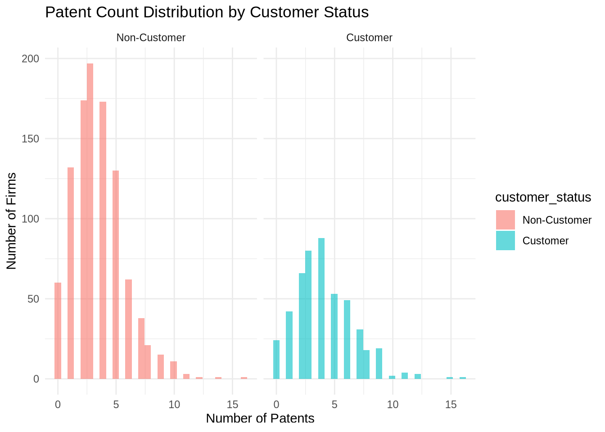
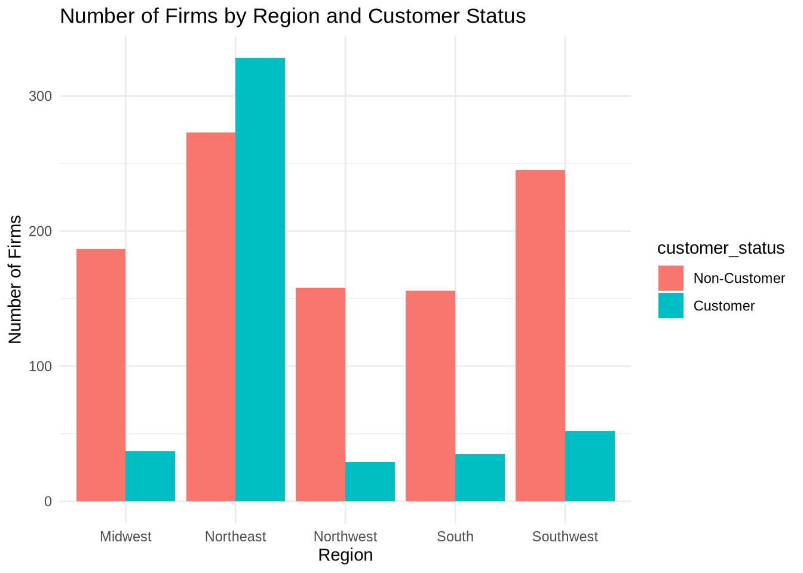
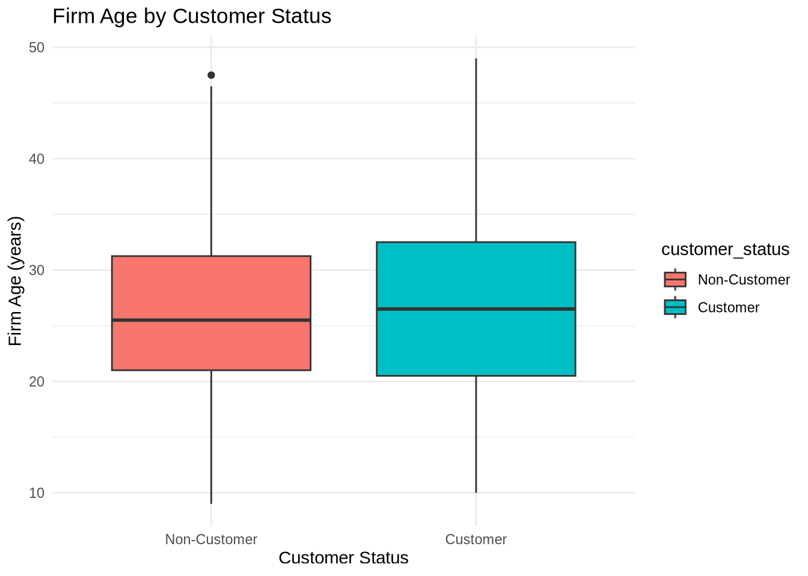
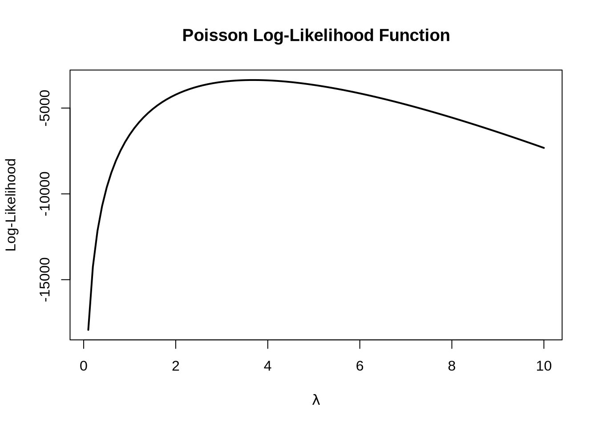
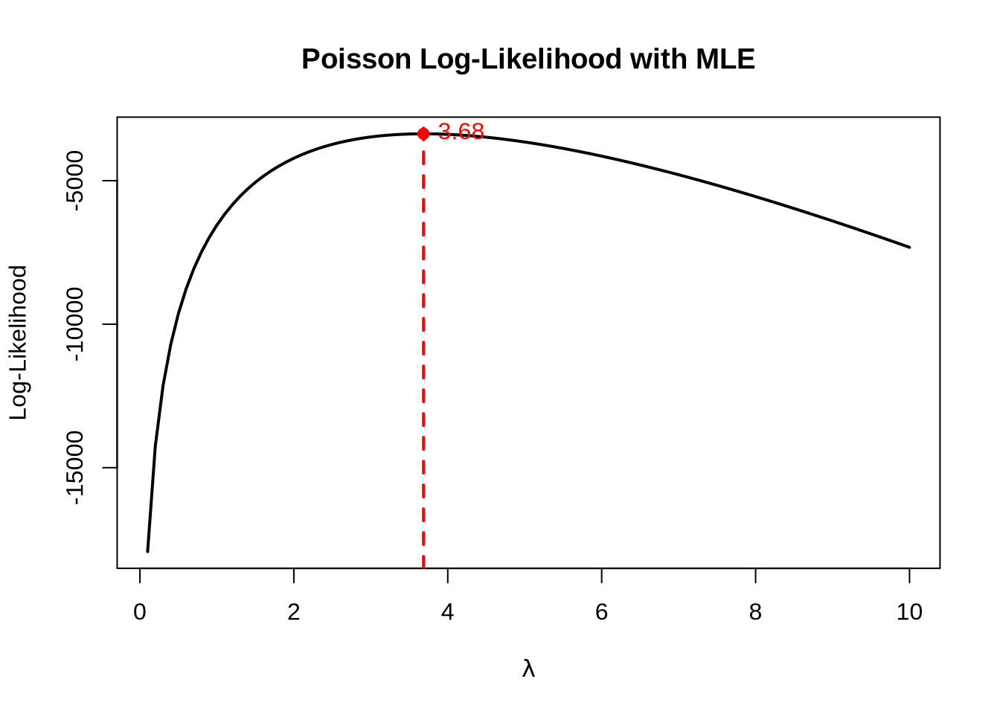
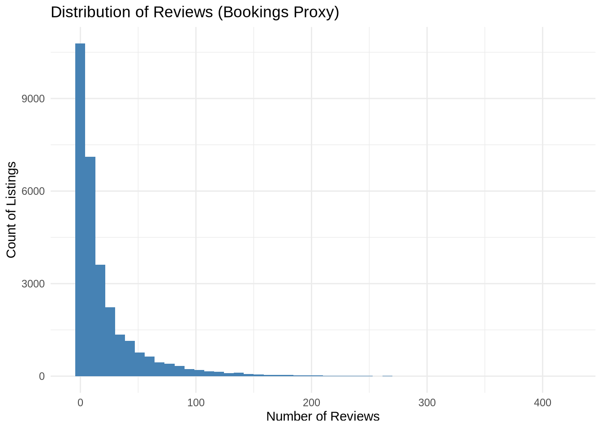
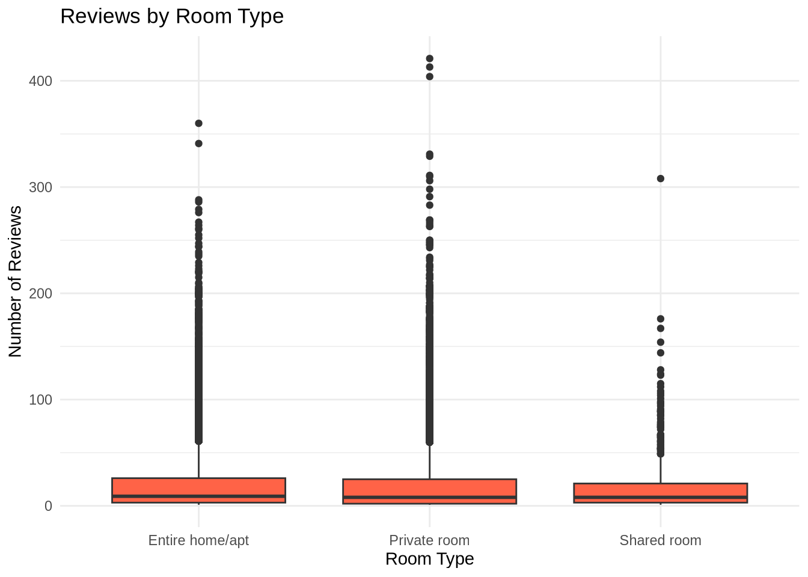
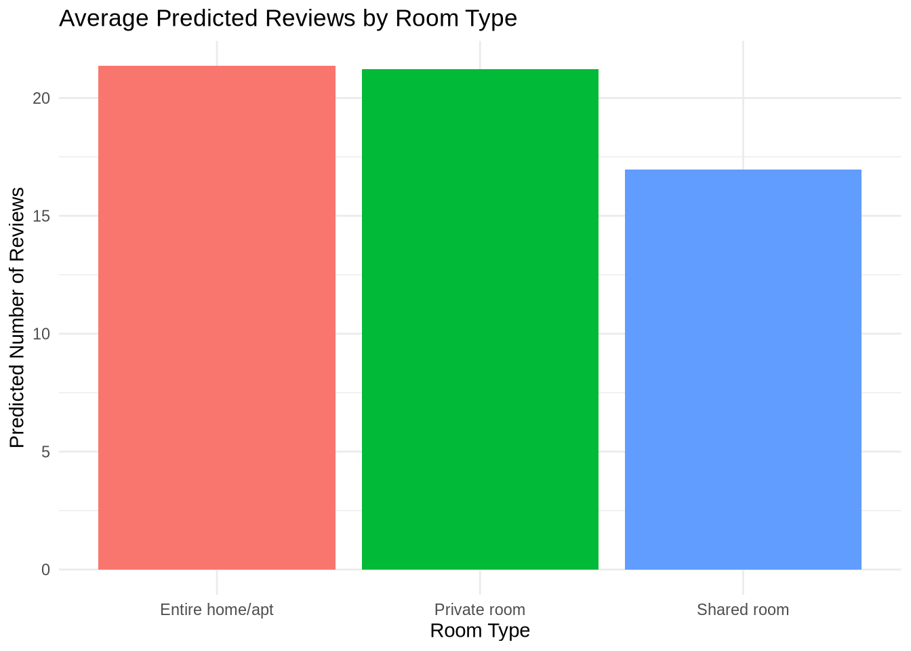

library(readr)
library(dplyr)Poisson Regression Examples
Blueprinty Case Study
Introduction
Blueprinty is a small firm that makes software for developing blueprints specifically for submitting patent applications to the US patent office. Their marketing team would like to make the claim that patent applicants using Blueprinty’s software are more successful in getting their patent applications approved. Ideal data to study such an effect might include the success rate of patent applications before using Blueprinty’s software and after using it. Unfortunately, such data is not available.
However, Blueprinty has collected data on 1,500 mature (non-startup) engineering firms. The data include each firm’s number of patents awarded over the last 5 years, regional location, age since incorporation, and whether or not the firm uses Blueprinty’s software. The marketing team would like to use this data to make the claim that firms using Blueprinty’s software are more successful in getting their patent applications approved.
Data
library(ggplot2)
# Read in the dataset
df <- read_csv("files/blueprinty.csv", show_col_types = FALSE)
glimpse(df)Rows: 1,500
Columns: 4
$ patents <dbl> 0, 3, 4, 3, 3, 6, 5, 5, 6, 4, 2, 3, 7, 4, 5, 4, 2, 2, 2, 5,…
$ region <chr> "Midwest", "Southwest", "Northwest", "Northeast", "Southwes…
$ age <dbl> 32.5, 37.5, 27.0, 24.5, 37.0, 29.5, 27.0, 20.5, 25.0, 29.5,…
$ iscustomer <dbl> 0, 0, 1, 0, 0, 1, 0, 0, 0, 0, 0, 0, 0, 1, 0, 0, 0, 0, 1, 1,…# Convert iscustomer to factor for labeling
df <- df %>% mutate(customer_status = factor(iscustomer, labels = c("Non-Customer", "Customer")))
# Mean patents by customer status
df %>%
group_by(customer_status) %>%
summarise(mean_patents = mean(patents), .groups = "drop")# A tibble: 2 × 2
customer_status mean_patents
<fct> <dbl>
1 Non-Customer 3.47
2 Customer 4.13# Histogram
ggplot(df, aes(x = patents, fill = customer_status)) +
geom_histogram(alpha = 0.6, position = "identity", bins = 30) +
facet_wrap(~customer_status) +
labs(title = "Patent Count Distribution by Customer Status",
x = "Number of Patents",
y = "Number of Firms") +
theme_minimal()
# REGION: Count of firms by region and customer status
region_summary <- df %>%
count(region, customer_status)
# Plot: Region-wise distribution
ggplot(region_summary, aes(x = region, y = n, fill = customer_status)) +
geom_bar(stat = "identity", position = "dodge") +
labs(title = "Number of Firms by Region and Customer Status",
x = "Region", y = "Number of Firms") +
theme_minimal()
# AGE: Boxplot of firm age by customer status
ggplot(df, aes(x = customer_status, y = age, fill = customer_status)) +
geom_boxplot() +
labs(title = "Firm Age by Customer Status",
x = "Customer Status", y = "Firm Age (years)") +
theme_minimal()
Estimation of Simple Poisson Model
Since our outcome variable of interest can only be small integer values per a set unit of time, we can use a Poisson density to model the number of patents awarded to each engineering firm over the last 5 years. We start by estimating a simple Poisson model via Maximum Likelihood.
\[ Y_i \sim \text{Poisson}(\lambda) \]
The probability mass function for a Poisson-distributed variable is:
\[ f(Y_i \mid \lambda) = \frac{e^{-\lambda} \lambda^{Y_i}}{Y_i!} \]
We now write the likelihood function for a sample of ( n ) independent observations ( Y_1, Y_2, , Y_n ):
\[ L(\lambda \mid Y_1, \dots, Y_n) = \prod_{i=1}^{n} \frac{e^{-\lambda} \lambda^{Y_i}}{Y_i!} \]
This simplifies to:
\[ L(\lambda) = \frac{e^{-n\lambda} \lambda^{\sum Y_i}}{\prod_{i=1}^{n} Y_i!} \]
Taking the natural logarithm gives the log-likelihood function:
\[ \log L(\lambda) = -n\lambda + \left( \sum_{i=1}^{n} Y_i \right) \log \lambda - \sum_{i=1}^{n} \log Y_i! \]
This function will form the basis for estimating ( ) via Maximum Likelihood Estimation (MLE).
Define Poisson log-likelihood function
poisson_loglikelihood <- function(lambda, Y) {
if (lambda <= 0) return(-Inf) # log-likelihood is undefined for non-positive lambda
n <- length(Y)
log_lik <- -n * lambda + sum(Y) * log(lambda) - sum(lfactorial(Y))
return(log_lik)
}Plotting the Log-Likelihood for Varying Lambda
# Vector of observed patent counts
Y <- df$patents
# Define a range of lambda values
lambda_vals <- seq(0.1, 10, by = 0.1)
# Compute log-likelihood for each lambda
loglik_vals <- sapply(lambda_vals, poisson_loglikelihood, Y = Y)
# Plot
plot(lambda_vals, loglik_vals, type = "l", lwd = 2,
xlab = expression(lambda),
ylab = "Log-Likelihood",
main = "Poisson Log-Likelihood Function")
Deriving the MLE for λ in the Poisson Model
We begin with the log-likelihood function for a Poisson-distributed variable ( Y_1, , Y_n () ):
\[ \log L(\lambda) = -n\lambda + \left( \sum_{i=1}^{n} Y_i \right) \log \lambda - \sum_{i=1}^{n} \log Y_i! \]
Since the last term does not depend on ( ), we focus on the first two terms when maximizing:
\[ \log L(\lambda) = -n\lambda + \left( \sum Y_i \right) \log \lambda \]
Taking the derivative with respect to ( ):
\[ \frac{d}{d\lambda} \log L(\lambda) = -n + \frac{\sum Y_i}{\lambda} \]
Set the derivative equal to zero to find the maximum:
\[ -n + \frac{\sum Y_i}{\lambda} = 0 \]
Solving for ( ):
\[ \lambda_{\text{MLE}} = \frac{1}{n} \sum Y_i = \bar{Y} \]
This result aligns with intuition: the mean of a Poisson distribution is ( ), so the sample mean is the natural estimator.
Finding the MLE Using optim()
# Negative log-likelihood (since optim minimizes)
neg_loglik <- function(lambda, Y) {
return(-poisson_loglikelihood(lambda, Y))
}
# Use optim() to find lambda that minimizes the negative log-likelihood
mle_result <- optim(par = 1, fn = neg_loglik, Y = df$patents, method = "Brent", lower = 0.01, upper = 10)
# Print MLE estimate
lambda_mle <- mle_result$par
lambda_mle[1] 3.684667
Estimation of Poisson Regression Model
Next, we extend our simple Poisson model to a Poisson Regression Model such that \(Y_i = \text{Poisson}(\lambda_i)\) where \(\lambda_i = \exp(X_i'\beta)\). The interpretation is that the success rate of patent awards is not constant across all firms (\(\lambda\)) but rather is a function of firm characteristics \(X_i\). Specifically, we will use the covariates age, age squared, region, and whether the firm is a customer of Blueprinty.
Defining the Poisson Regression Log-Likelihood Function
poisson_regression_loglikelihood <- function(beta, Y, X) {
# Linear predictor: X %*% beta gives a column vector
eta <- X %*% beta
# Inverse link function (log link): lambda = exp(X * beta)
lambda <- exp(eta)
# Log-likelihood function
log_lik <- sum(-lambda + Y * log(lambda) - lfactorial(Y))
return(log_lik)
}This function accepts: - beta: a vector of regression coefficients
- Y: a vector of observed patent counts
- X: a covariate matrix including firm-level predictors (e.g., age, region dummies, customer status)
Estimating Poisson Regression with Covariates Using optim()
We now construct the design matrix ( X ), find the MLE of the coefficient vector ( ), and calculate standard errors using the inverse of the Hessian matrix.
Step 1: Construct the Covariate Matrix
# Create region dummies (drop one to avoid multicollinearity)
df <- df %>%
mutate(region = factor(region)) %>%
mutate(age_sq = age^2)
X <- model.matrix(~ age + age_sq + region + iscustomer, data = df)
# Outcome variable
Y <- df$patentsStep 2: Define the Negative Log-Likelihood for optim()
neg_loglik_reg <- function(beta, Y, X) {
eta <- X %*% beta
lambda <- exp(eta)
-sum(-lambda + Y * log(lambda) - lfactorial(Y)) # Negative log-likelihood
}Step 3: Estimate MLE and Compute Hessian
# Initial guess: zero vector
init_beta <- rep(0, ncol(X))
# Optimize
fit <- optim(par = init_beta,
fn = neg_loglik_reg,
Y = Y, X = X,
method = "BFGS", hessian = TRUE)
# Extract estimates and variance-covariance matrix
beta_hat <- fit$par
hessian_mat <- fit$hessian
vcov_mat <- solve(hessian_mat) # Invert Hessian to get variance-covariance
se_hat <- sqrt(diag(vcov_mat)) # Standard errorsStep 4: Present Results in a Table
| Term | Estimate | Std_Error |
|---|---|---|
| (Intercept) | -0.1257 | 0.1122 |
| age | 0.1158 | 0.0064 |
| age_sq | -0.0022 | 0.0001 |
| regionNortheast | -0.0246 | 0.0434 |
| regionNorthwest | -0.0348 | 0.0529 |
| regionSouth | -0.0054 | 0.0524 |
| regionSouthwest | -0.0378 | 0.0472 |
| iscustomer | 0.0607 | 0.0321 |
The table shows the estimated effect of each covariate on the log of the expected number of patents. The standard errors are derived from the inverse Hessian, assuming the log-likelihood is approximately quadratic near the maximum.
Checking Results with glm()
To validate our MLE results, we fit the same Poisson regression model using R’s glm() function with the family = poisson option.
# Fit Poisson regression using glm()
glm_fit <- glm(patents ~ age + I(age^2) + region + iscustomer,
data = df, family = poisson())
# Summary of model
summary(glm_fit)
Call:
glm(formula = patents ~ age + I(age^2) + region + iscustomer,
family = poisson(), data = df)
Coefficients:
Estimate Std. Error z value Pr(>|z|)
(Intercept) -0.508920 0.183179 -2.778 0.00546 **
age 0.148619 0.013869 10.716 < 2e-16 ***
I(age^2) -0.002971 0.000258 -11.513 < 2e-16 ***
regionNortheast 0.029170 0.043625 0.669 0.50372
regionNorthwest -0.017574 0.053781 -0.327 0.74383
regionSouth 0.056561 0.052662 1.074 0.28281
regionSouthwest 0.050576 0.047198 1.072 0.28391
iscustomer 0.207591 0.030895 6.719 1.83e-11 ***
---
Signif. codes: 0 '***' 0.001 '**' 0.01 '*' 0.05 '.' 0.1 ' ' 1
(Dispersion parameter for poisson family taken to be 1)
Null deviance: 2362.5 on 1499 degrees of freedom
Residual deviance: 2143.3 on 1492 degrees of freedom
AIC: 6532.1
Number of Fisher Scoring iterations: 5The coefficient and standard error estimates obtained from glm() match closely with our custom implementation using optim(). This validates that our likelihood function and MLE approach are working as expected.
Estimating the Effect of Blueprinty Software
Since Poisson regression coefficients are on the log scale and not directly interpretable, we estimate the average marginal effect of using Blueprinty software by creating two hypothetical scenarios:
X_0: All firms are non-customers (iscustomer = 0)X_1: All firms are customers (iscustomer = 1)
We then predict patent counts in both cases using the fitted model and compare the difference.
# Step 1: Create X_0 and X_1
X_0 <- X
X_1 <- X
X_0[, "iscustomer"] <- 0
X_1[, "iscustomer"] <- 1
# Step 2: Predicted patent counts
eta_0 <- X_0 %*% beta_hat
eta_1 <- X_1 %*% beta_hat
y_pred_0 <- exp(eta_0)
y_pred_1 <- exp(eta_1)
# Step 3: Average difference
effect <- mean(y_pred_1 - y_pred_0)
effect[1] 0.2178843AirBnB Case Study
Introduction
AirBnB is a popular platform for booking short-term rentals. In March 2017, students Annika Awad, Evan Lebo, and Anna Linden scraped of 40,000 Airbnb listings from New York City. The data include the following variables:
Load and Explore the Data
library(readr)
library(dplyr)
library(ggplot2)
# Load the Airbnb dataset
airbnb <- read_csv("files/airbnb.csv")
# Glimpse structure
glimpse(airbnb)Rows: 40,628
Columns: 14
$ ...1 <dbl> 1, 2, 3, 4, 5, 6, 7, 8, 9, 10, 11, 12, 13, 1…
$ id <dbl> 2515, 2595, 3647, 3831, 4611, 5099, 5107, 51…
$ days <dbl> 3130, 3127, 3050, 3038, 3012, 2981, 2981, 29…
$ last_scraped <chr> "4/2/2017", "4/2/2017", "4/2/2017", "4/2/201…
$ host_since <chr> "9/6/2008", "9/9/2008", "11/25/2008", "12/7/…
$ room_type <chr> "Private room", "Entire home/apt", "Private …
$ bathrooms <dbl> 1, 1, 1, 1, NA, 1, 1, NA, 1, 1, 1, 1, 1, NA,…
$ bedrooms <dbl> 1, 0, 1, 1, 1, 1, 2, 1, 1, 1, 1, 1, 1, 1, 2,…
$ price <dbl> 59, 230, 150, 89, 39, 212, 250, 60, 129, 79,…
$ number_of_reviews <dbl> 150, 20, 0, 116, 93, 60, 60, 50, 53, 329, 11…
$ review_scores_cleanliness <dbl> 9, 9, NA, 9, 9, 9, 10, 8, 9, 7, 10, 9, 9, 9,…
$ review_scores_location <dbl> 9, 10, NA, 9, 8, 9, 9, 9, 10, 10, 10, 9, 10,…
$ review_scores_value <dbl> 9, 9, NA, 9, 9, 9, 10, 9, 9, 9, 10, 9, 10, 9…
$ instant_bookable <lgl> FALSE, FALSE, FALSE, FALSE, TRUE, FALSE, FAL…# Summary of missing values
colSums(is.na(airbnb)) ...1 id days
0 0 0
last_scraped host_since room_type
0 35 0
bathrooms bedrooms price
160 76 0
number_of_reviews review_scores_cleanliness review_scores_location
0 10195 10254
review_scores_value instant_bookable
10256 0 We begin by loading the dataset and checking for missing values. This helps us identify which variables may need to be cleaned or dropped before modeling.
Clean the Data
library(tidyr) # Needed for drop_na()
# Keep only relevant variables and drop rows with missing values
airbnb_clean <- airbnb %>%
select(number_of_reviews, room_type, bathrooms, bedrooms, price,
review_scores_cleanliness, review_scores_location,
review_scores_value, instant_bookable, days) %>%
drop_na()We focus on variables likely to affect booking frequency and remove rows with missing values. This ensures our Poisson model will run without NA-related errors.
Exploratory Data Analysis
# Distribution of number of reviews
ggplot(airbnb_clean, aes(x = number_of_reviews)) +
geom_histogram(bins = 50, fill = "steelblue") +
labs(title = "Distribution of Reviews (Bookings Proxy)",
x = "Number of Reviews", y = "Count of Listings") +
theme_minimal()
# Reviews by room type
ggplot(airbnb_clean, aes(x = room_type, y = number_of_reviews)) +
geom_boxplot(fill = "tomato") +
labs(title = "Reviews by Room Type",
x = "Room Type", y = "Number of Reviews") +
theme_minimal()
Fit a Poisson Regression Model
# Convert categorical variables
airbnb_clean$instant_bookable <- airbnb_clean$instant_bookable == "t"
# Fit the model
poisson_model <- glm(number_of_reviews ~ room_type + bathrooms + bedrooms +
price + review_scores_cleanliness + review_scores_location +
review_scores_value + instant_bookable + days,
data = airbnb_clean, family = poisson())
# Summary
summary(poisson_model)
Call:
glm(formula = number_of_reviews ~ room_type + bathrooms + bedrooms +
price + review_scores_cleanliness + review_scores_location +
review_scores_value + instant_bookable + days, family = poisson(),
data = airbnb_clean)
Coefficients: (1 not defined because of singularities)
Estimate Std. Error z value Pr(>|z|)
(Intercept) 3.646e+00 1.595e-02 228.572 < 2e-16 ***
room_typePrivate room 1.213e-02 2.735e-03 4.435 9.19e-06 ***
room_typeShared room -2.172e-01 8.616e-03 -25.204 < 2e-16 ***
bathrooms -1.105e-01 3.789e-03 -29.163 < 2e-16 ***
bedrooms 7.562e-02 2.005e-03 37.715 < 2e-16 ***
price -3.697e-05 8.554e-06 -4.322 1.55e-05 ***
review_scores_cleanliness 1.138e-01 1.489e-03 76.419 < 2e-16 ***
review_scores_location -8.086e-02 1.600e-03 -50.527 < 2e-16 ***
review_scores_value -9.708e-02 1.795e-03 -54.091 < 2e-16 ***
instant_bookableTRUE NA NA NA NA
days 4.962e-05 4.029e-07 123.163 < 2e-16 ***
---
Signif. codes: 0 '***' 0.001 '**' 0.01 '*' 0.05 '.' 0.1 ' ' 1
(Dispersion parameter for poisson family taken to be 1)
Null deviance: 961626 on 30159 degrees of freedom
Residual deviance: 940403 on 30150 degrees of freedom
AIC: 1061889
Number of Fisher Scoring iterations: 9Visualizing Predicted Reviews by Room Type

Interpreting the Exponentiated Coefficients
# View exponentiated coefficients
exp(coef(poisson_model)) (Intercept) room_typePrivate room room_typeShared room
38.3132645 1.0122050 0.8047943
bathrooms bedrooms price
0.8953793 1.0785548 0.9999630
review_scores_cleanliness review_scores_location review_scores_value
1.1205166 0.9223183 0.9074845
instant_bookableTRUE days
NA 1.0000496